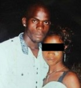
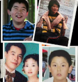

Case Spotlight
Midnight in La Cygne

Episode Summary
A night that was supposed to be ordinary ended in silence. In April 2004, 23-year-old Alonzo Brooks traveled to a party in La Cygne, Kansas. One of the only Black men in a crowd of over a hundred. By morning, he was gone.
What followed was a case defined by contradictions. Friends who left him behind. Witnesses who couldn’t agree. Reports of racial hostility that were never fully pursued. And a search that turned up nothing—until his family stepped in.
Within hours, they found what law enforcement could not. A body in plain sight. A death ruled undetermined, then later a homicide. Decades later, the question remains: in a town where many were present, why has no one been held accountable?
Inside the Case File
Key Evidence
- Conflicting witness statements
- Items found near the scene (boots, hat)
- Body located in previously searched area
- Second autopsy indicating possible foul play
Systemic Issues
- Delayed missing persons response
- Racial hostility reported at the scene
- Inconsistent investigation and oversight
- Community silence and lack of cooperation
Ongoing Questions
- Why wasn’t Alonzo found during initial searches?
- What really happened after his friends left?
Noir Files
All Episodes on Buzzsprout →Silent Cry
A Honeymoon Nightmare
London's Lost Son
40 Days of Darkness

Dragged to Death

Guardian of the Amazon

Warning Shot
The Long Night
Unwarranted

Striding in Stilettos

When Power Fears Truth
Noir Files: Asha Degree — The Breakthrough

2 Lives Stolen, 2 Babies Taken
Rugby and Rage

Inaugural Dreams, Chicago's Sorrow

Jaliek's Note

The North Epping Nightmare
Laughter, Lipstick, and Lies